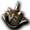
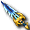
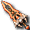
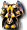
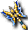
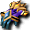
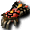

佛克原野
佛雷斯小徑1
因特原野
１｜２｜３｜４
出現怪物
 哥布林（戰士）
哥布林（戰士）
| 哥布林（戰士） | Lv | AC | MC | AAR | SAR | 掉落物品 |
| HP:76527 | 120 | -25 | -35 | 51 | 51 |  秘術赫爾莉克、 秘術赫爾莉克、 秘術史黛莉克、 秘術史黛莉克、 秘術瑪娜莉克、 秘術瑪娜莉克、 心靈守護者之盔、 心靈武僧之盔、摩斯束縛者、 心靈武僧之盔、摩斯束縛者、 心靈卡組守護者、 心靈卡組守護者、 解放大地護符、解放春雨之鍊、 解放大地護符、解放春雨之鍊、 解放燎炎之鍊、解放微風護符、忘卻的雷歐加爾特豎琴、 解放燎炎之鍊、解放微風護符、忘卻的雷歐加爾特豎琴、 忘卻的雷歐加爾特長槍、 忘卻的斯科爾菲吉長槍、忘卻的斯科爾菲吉指虎、忘卻的斯科爾菲吉豎琴、 忘卻的雷歐加爾特護肩、 忘卻的雷歐加爾特護肩、 忘卻的斯科爾菲吉護肩、 忘卻的斯科爾菲吉護肩、 被封印的雷歐加爾特頭盔（男）、被封印的雷歐加爾特頭盔（女）、 被封印的雷歐加爾特頭盔（男）、被封印的雷歐加爾特頭盔（女）、 被封印的雷歐加爾特頭帶（男）、被封印的雷歐加爾特頭帶（女）、 被封印的雷歐加爾特頭帶（男）、被封印的雷歐加爾特頭帶（女）、 被封印的斯科爾菲吉頭盔（男）、被封印的斯科爾菲吉頭盔（女）、 被封印的斯科爾菲吉頭盔（男）、被封印的斯科爾菲吉頭盔（女）、 被封印的斯科爾菲吉頭帶（男）、被封印的斯科爾菲吉頭帶（女）、 被封印的斯科爾菲吉頭帶（男）、被封印的斯科爾菲吉頭帶（女）、 騎士武器碎片、 騎士武器碎片、 武器附魔捲軸、防具附魔捲軸、飾品附魔捲軸、 武器附魔捲軸、防具附魔捲軸、飾品附魔捲軸、 上級飾品附魔捲軸、上級武器附魔捲軸、上級防具附魔捲軸 上級飾品附魔捲軸、上級武器附魔捲軸、上級防具附魔捲軸 |
| 經驗值 | 名聲值 | 金錢 | 攻擊屬性 | 防禦屬性 | ||
| 18,000 | 3,200 | 0 | 隨機 | 隨機 | ||
| STR | DEX | INT | WIS | CON | ||
| 147 | 132 | 87 | 98 | 52 |
備註：遠距離時恐懼。瀕死時逃跑。即使DEX+HIT+SLV=420仍會出現非暴擊的怪物
哥布林（突擊兵）
| 哥布林（突擊兵） | Lv | AC | MC | AAR | SAR | 掉落物品 |
| HP:83441 | 120 | -23 | -33 | 38 | 38 | 秘術赫爾莉克、秘術瑪娜莉克、魔力法杖、心靈守護者之盔、心靈卡組守護者、  忘卻的雷歐加爾特布衣（男）、 忘卻的雷歐加爾特彎刀、忘卻的斯科爾菲吉豎琴、忘卻的斯科爾菲吉彎刀、忘卻的斯科爾菲吉護肩、被封印的雷歐加爾特頭盔（男）、被封印的雷歐加爾特頭盔（女）、被封印的斯科爾菲吉頭盔（男）、被封印的斯科爾菲吉頭盔（女）、 吟遊詩人武器碎片、武器附魔捲軸、防具附魔捲軸、飾品附魔捲軸、上級飾品附魔捲軸、上級武器附魔捲軸、上級防具附魔捲軸 吟遊詩人武器碎片、武器附魔捲軸、防具附魔捲軸、飾品附魔捲軸、上級飾品附魔捲軸、上級武器附魔捲軸、上級防具附魔捲軸 |
| 經驗值 | 名聲值 | 金錢 | 攻擊屬性 | 防禦屬性 | ||
| 14,800 | 3,000 | 0 | 隨機 | 隨機 | ||
| STR | DEX | INT | WIS | CON | ||
| 174 | 128 | 79 | 97 | 49 |
備註：遠距離時治療效果減少。緩慢施法２。禁止行動。瀕死時逃跑。即使DEX+HIT+SLV=420仍會出現非暴擊的怪物
 突變獅鷲
突變獅鷲
| 突變獅鷲 | Lv | AC | MC | AAR | SAR | 掉落物品 |
| HP:55451 | 120 | -44 | -99 | 61 | 61 | 秘術赫爾莉克、秘術史黛莉克、秘術瑪娜莉克、 快速藥水[30分]、 快速藥水[30分]、 忘卻的雷歐加爾特長靴、忘卻的雷歐加爾特閃避護脛、忘卻的雷歐加爾特布利特護脛、忘卻的雷歐加爾特伊爾德護脛、被封印的雷歐加爾特力量戒指、被封印的雷歐加爾特布利特戒指、被封印的雷歐加爾特魔力戒指、 忘卻的雷歐加爾特長靴、忘卻的雷歐加爾特閃避護脛、忘卻的雷歐加爾特布利特護脛、忘卻的雷歐加爾特伊爾德護脛、被封印的雷歐加爾特力量戒指、被封印的雷歐加爾特布利特戒指、被封印的雷歐加爾特魔力戒指、 戰士武器碎片、武器附魔捲軸、防具附魔捲軸、飾品附魔捲軸、上級飾品附魔捲軸、上級武器附魔捲軸、上級防具附魔捲軸 戰士武器碎片、武器附魔捲軸、防具附魔捲軸、飾品附魔捲軸、上級飾品附魔捲軸、上級武器附魔捲軸、上級防具附魔捲軸 |
| 經驗值 | 名聲值 | 金錢 | 攻擊屬性 | 防禦屬性 | ||
| 20,300 | 3,800 | - | - | - | ||
| STR | DEX | INT | WIS | CON | ||
| 159 | 172 | 93 | 121 | 62 |
備註：迴避破壞。瀕死時？防禦破壞。即使DEX+HIT+SLV=420仍會出現非暴擊的怪物
赫哥雷貓
| 赫哥雷貓 | Lv | AC | MC | AAR | SAR | 掉落物品 |
| HP:62315 | 120 | -22 | -92 | 91 | 91 | 秘術赫爾莉克、秘術史黛莉克、魔力法杖、快速藥水[30分]、 高級速度藥水[30分]、 高級速度藥水[30分]、 忘卻的雷歐加爾特鞋、忘卻的雷歐加爾特長靴、忘卻的雷歐加爾特布利特護脛、忘卻的雷歐加爾特閃避護脛、忘卻的雷歐加爾特伊爾德護脛、被封印的雷歐加爾特布利特戒指、被封印的雷歐加爾特力量戒指、被封印的雷歐加爾特魔力戒指、修道士武器碎片、武器附魔捲軸、飾品附魔捲軸、防具附魔捲軸、上級防具附魔捲軸、上級武器附魔捲軸、上級飾品附魔捲軸 忘卻的雷歐加爾特鞋、忘卻的雷歐加爾特長靴、忘卻的雷歐加爾特布利特護脛、忘卻的雷歐加爾特閃避護脛、忘卻的雷歐加爾特伊爾德護脛、被封印的雷歐加爾特布利特戒指、被封印的雷歐加爾特力量戒指、被封印的雷歐加爾特魔力戒指、修道士武器碎片、武器附魔捲軸、飾品附魔捲軸、防具附魔捲軸、上級防具附魔捲軸、上級武器附魔捲軸、上級飾品附魔捲軸 |
| 經驗值 | 名聲值 | 金錢 | 攻擊屬性 | 防禦屬性 | ||
| 18,700 | 3,600 | - | - | 隨機 | ||
| STR | DEX | INT | WIS | CON | ||
| 124 | 203 | 106 | 135 | 49 |
備註：衝擊長槍(遠距離攻擊)。迴避破壞。物理破壞。即使DEX+HIT+SLV=420仍會出現非暴擊的怪物
 拉歐露莉
拉歐露莉
| 拉歐露莉 | Lv | AC | MC | AAR | SAR | 掉落物品 |
| HP:88980 | 120 | -15 | -95 | 91 | 51 | 秘術赫爾莉克、秘術史黛莉克、快速藥水[30分]、高級速度藥水[30分]、各種微塵電漿、  忘卻的雷歐加爾特手套、忘卻的雷歐加爾特鐵手套、 忘卻的雷歐加爾特護腕、 被封印的雷歐加爾特力量耳環、 被封印的雷歐加爾特力量耳環、 被封印的雷歐加爾特布利特耳環、 被封印的雷歐加爾特布利特耳環、 被封印的雷歐加爾特魔力耳環、吟遊詩人武器碎片、武器附魔捲軸、防具附魔捲軸、飾品附魔捲軸、上級飾品附魔捲軸、上級武器附魔捲軸、上級防具附魔捲軸 被封印的雷歐加爾特魔力耳環、吟遊詩人武器碎片、武器附魔捲軸、防具附魔捲軸、飾品附魔捲軸、上級飾品附魔捲軸、上級武器附魔捲軸、上級防具附魔捲軸 |
| 經驗值 | 名聲值 | 金錢 | 攻擊屬性 | 防禦屬性 | ||
| 17,400 | 5,300 | 11711~ | - | 隨機 | ||
| STR | DEX | INT | WIS | CON | ||
| 143 | 184 | 107 | 144 | 78 |
備註：風之衝擊(遠距離攻擊)。偶爾大傷害攻擊。即使DEX+HIT+SLV=420仍會出現非暴擊的怪物
無情的哥布林
| 無情的哥布林 | Lv | AC | MC | AAR | SAR | 掉落物品 |
| HP:375611 | 120 | -36 | -66 | 43 | 43 | 電漿捲軸、 染色劑[黑色]、 染色劑[黑色]、 染色劑[深綠色]、被封印的雷歐加爾特斧、 染色劑[深綠色]、被封印的雷歐加爾特斧、 被封印的斯科爾菲吉劍卡、空氣圈、戰士武器碎片、被封印的斯科爾菲吉頭盔（男）、被封印的斯科爾菲吉頭帶（女）、 被封印的斯科爾菲吉劍卡、空氣圈、戰士武器碎片、被封印的斯科爾菲吉頭盔（男）、被封印的斯科爾菲吉頭帶（女）、 預言者武器碎片 預言者武器碎片 |
| 經驗值 | 名聲值 | 金錢 | 攻擊屬性 | 防禦屬性 | ||
| 27,300 | 6,100 | 0 | 隨機 | 隨機 | ||
| STR | DEX | INT | WIS | CON | ||
| 159 | 141 | 99 | 101 | 99 |
備註：恐怖、瀕死時逃亡、重生間隔約12小時、即使DEX+HIT+SLV=420仍會出現非暴擊的怪物
掉落備忘
忘卻的雷歐加爾特豎琴
忘卻的雷歐加爾特彎刀
忘卻的雷歐加爾特手套
被封印的斯科爾菲吉頭帶（男）
被封印的斯科爾菲吉頭盔（男）
被封印的斯科爾菲吉頭帶（女）
被封印的雷歐加爾特魔力戒指
忘卻的雷歐加爾特護肩